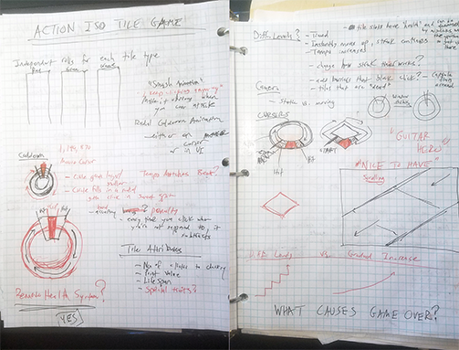
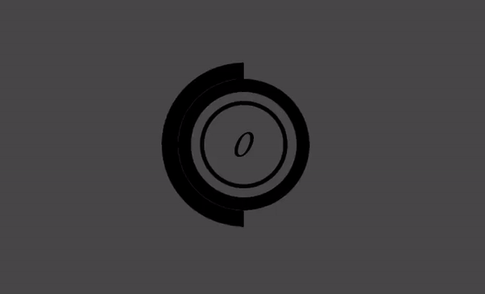
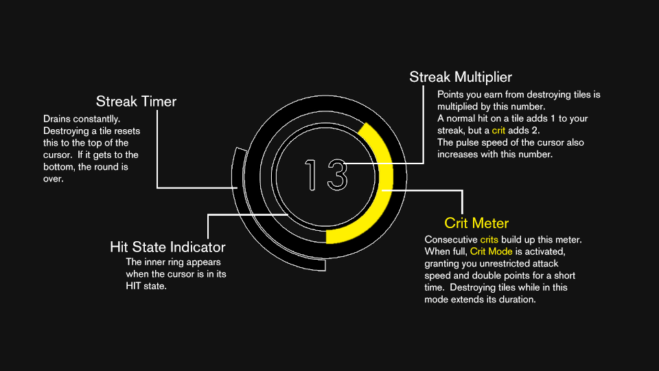
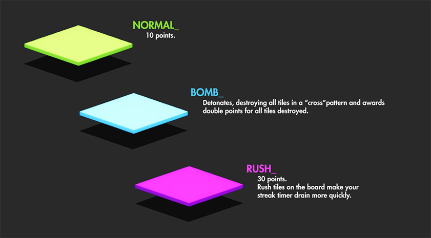
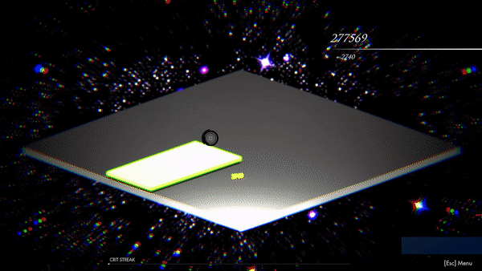

PROJECT HIGHLIGHT:
Tyle
Overview
In Tyle, players click on randomly generated tiles in a certain rhythm and are awarded points based on how well (and for how long) they can do this.Destroy tiles with perfectly timed clicks, keep up your hit streak, and rack up a massive score to top the leaderboard.

Click to play
[Click here to play the game]
(Web, PC, and Mac. Not available for Mobile yet.)
GAME DESIGN PROCESS
Brainstorming and Concept
I envisioned a game that would be easy and satisfying to play, slightly addictive, and would provide an atmospheric experience. My design philosophy with the art style and UI would prove to be a very minimal one in all aspects, with the exception of VFX, possibly. The gameplay mechanics test players' timing as well as their hand-eye coordination. I thought it might be fun to incorporate the popular concepts of both "streaks" and "perfect hits" to emphasize timing and consistency. I had also been wanting to experiment with a simple geometric art style for quite some time.Here are some early quick sketches:

Click or tap to enlarge
First Iteration
My initial concept for the game was to have colored tiles randomly appear on the screen and the
player would click them to destroy them as fast as they could, building up a hit streak. Tiles
would be worth a base point value and then that would be multiplied by the player's current
streak number to add to their total score.
At game start, the player’s streak countdown timer, starting at 5 seconds, begins to deplete.
The player has that amount of time to successfuly destroy a tile. When they do, it resets the
streak countdown and increases their streak by 1. If the hit was a critical hit (perfect
timing), their streak will increase by 2. If the countdown timer reaches zero, it's game
over.
As I tested this initial concept I noticed that I would simply spam mouse clicks everywhere and
it didn’t really seem too fun or challenging.
Timing Mechanic & Mouse Cursor
In order to make clicking more intentional, I decided to implement a timing mechanic that would force the player to time their clicks based on a certain rhythm. This “attack cycle” would initially last around 1.25 seconds and would include a Miss state, a Hit state, and a Crit(ical) state. The result the player would get would be based on which state the cycle was in when clicking a tile. A player could only click once per cycle, which meant that a mis-timed click could really hurt the player's progress or put them in danger of breaking their streak. The higher a player's streak got, the faster the cycle would go and the faster the tiles would appear.To indicate the "attack cycle" mechanic to the player, I made a circular mouse cursor that would rotate clockwise to show the progress of the cycle. It would also change color depending on what state it was currently in-- Miss, Hit, or Crit.
Initial cursor design
Types of Tiles
As for the role of the tiles in the game, I brainstormed ways to challenge the player while they were attempting to build their streak. I made two tile types for the game: normal and enemy. I considered a simple "combat" system where enemy tiles in play would damage the player, but quickly realized that this concept would not serve the design theme. Instead of draining health, I made the enemy tiles cause the player’s streak countdown to drain faster, challenging their goal of keeping the streak alive.Art and Sound
I knew I wanted to make a game with a clean, minimal aesthetic. This philosophy would extend to the UI design as well as to the visual style of the gameplay space. I chose a relatively subdued gray color for the playing board and background so that the brightly colored tiles would really pop. Various post processing effects such as a vignette and bloom were used to add flavor.To further support the atmospheric vibe, I created a soundtrack that is very mellow and ambient. Employing heavy use of virtual synths, 808 bass hits and a handful of japanese instruments in Ableton Live, I created two tracks that I believe add an interesting vibe and flavor to the user experience. For sound effects, I knew that clicking tiles was going to be repetitve, so I wanted a sound effect that would be pleasing to hear over and over again, and not too intrusive or abrasive. I made use of a soft 808 bass hit that seemed to serve this purpose well. Additional sounds were added in the second iteration of the game.
One of the tracks from Tyle:
Second Iteration
Player Feedback and Improvements
After sharing the prototype for playtesting, things that people commonly praised were the visual look, sound and mood, fun factor, and simplicity in its design. One fellow dev said it could be the "next hypercasual trending" game. Common criticisms related to the way that the cursor worked and also the expectation that the attack cycle would coincide with the beat of the music, like in a rhythm game, which it did not. It was also concluded that a more intuitive and easy-to-understand tutorial should be introduced in the next version.Since the timing concept was so crucial to the game and it was not always being successfully communicated to the player, I set about redesigning the mouse cursor to make it more useful and informative.
UI & Cursor Redesign
With "Cursor 2.0" I wanted to convey as much information to the player as possible in one place. This was for two reasons. First, so that I could do away with UI elements that were cluttering up the screen, further facilitating the minimal aesthetic. Secondly, the game requires a good amount of focus and I didn't want the player to have to look away from the cursor too often as this could mess up their timing.To convey the timing mechanic, the cursor would now grow larger as it neared the miss state, and would shrink as it approached the hit state. I also added a bit of an opacity shift as well, becoming more opaque near the desired hit state. Finally, an inner ring would appear during the hit state as well. These changes seemed to really help communicate the timing and improved the "feel" of the cursor, too:

Revised cursor design
Several UI elements would now be displayed on the cursor including the countdown timer and the player's current streak:

Click or tap to enlarge
Some of my notes during the second iteration:
Click or tap to enlarge
Bomb Tile
Since the game's conception I had imagined having some kind of way to quickly destroy multiple tiles in one click, but wasn't able to implement this in the first short iteration. The second time around, I added a blue Bomb tile which would destoy tiles in an "X" pattern across the board. On detonation, it would create a huge screen flash, camera shake, and deep bass sound effect.The three tile types:

"Crit Mode"
At this point the game was starting to become fun, but I thought the gameplay was still lacking a little depth. I felt that some sort of temporary bonus mode could be exciting for the player and keep them interested. Keeping with the streak theme, I decided to reward the player for getting 10 crits in a row. This would mean the player would not only be tasked with not breaking the main kill streak, but also to attempt to continuously get perfectly timed hits.After 10 successive crits, "Crit Mode" would temporarily engage, completely removing the timing restriction, allowing the player to destroy tiles as quickly as they could click, as well as drastically increasing the rate that tiles appear. Each tile destroyed while in this mode would extend its duration by a small amount.
Visually, I wanted a stark contrast between this new bonus mode and the normal mode, so I added a scrolling star background, special mouse cursor, light beam effects, as well as heavy post processing. Several new sound effects accompanied this new mode as well.

Crit Mode in action